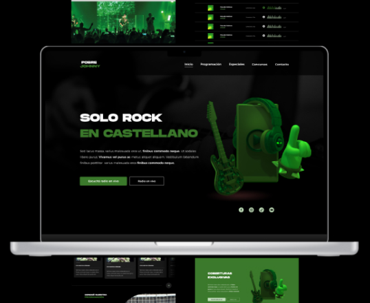
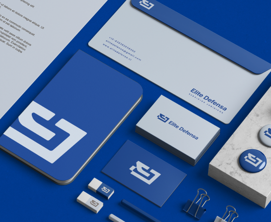

TRABAJOS






Hola, soy Juan, originario de la ciudad de Neuquén y actualmente establecido en Córdoba
Capital,
Argentina. Desde mi infancia, el impulso creativo ha sido esencial, expresándose a
través de la creación, la invención, la escritura, la música y el dibujo. Mi carrera me ha
llevado a abrazar el campo del Diseño Gráfico y la producción musical como mis principales vías de
comunicación.
Durante varios años, he tenido el privilegio de sumergirme en el mundo de la radio,
un
espacio en el que convergen dos de mis grandes pasiones. Allí, doy forma tanto a imagen como a
sonido, ambos elementos clave en la definición y producción de la experiencia
audiovisual.
Mi
enfoque radica en encontrar auténtica pasión en cada proyecto que decido emprender,
infundiendo en ellos
un significado que va más allá de lo meramente profesional. Además, mi naturaleza perfeccionista impulsa
mi compromiso con la calidad y la atención al detalle.
En esencia, soy un
profesional creativo
que encuentra satisfacción en el proceso de dar vida a ideas. Mi objetivo es crear un impacto
significativo a
través de mi trabajo, mientras sigo explorando y expandiendo mis horizontes creativos en
constante
evolución.
Mi primer experiencia freelance fue sin duda una etapa de aprendizaje, especialmente por el
desafío que plantea ser productor y a la vez gestor de clientes.
Mis primeros
trabajos estuvieron relacionados con indentidad de marca y contenido para redes sociales. Un
punto positivo de esa experiencia fue adquirir nociones y prácticas básicas de copywriting y
marketing digital.
Grupo Shopping es una empresa de medios de la ciudad de Códoba. Contiene 4 radios de
música y sus respectivas redes sociales (FM 94.7 Loca Suelta, FM 88.9 Pobre Johnny, FM 103.1
Mansa y FM 96.1 Shopping Classics).
Mis tareas están ligadas a la comunicación
audiovisual en RRSS, y al diseño y edición de audio para aire y comerciales.
Al
momento, sigo perfeccionando
mis habilidades en estas tareas, habiendo logrado producciones de calidad profesional, que
compiten con las radios más escuchadas en Córdoba.
La segunda radio más escuchada de la capital cordobeza, también llamada "El lugar en el
mundo del rock en castellano".
Mis responsabilidades para con la emisora implican el
diseño y producción de la estética visual y sonora (Artísticas, comerciales, promos,
especiales)
Actualmente, llevo 2 años recolectando experiencia de manera independiente en el rubro,
ofreciendo servicios de Diseño y Desarrollo Web tanto a empresas con las que ya tenía un
vínculo laboral como a nuevos clientes.
Esto le aportó valor a mi trabajo como
Diseñador Gráfico, ya que desarrollé un criterio que no solo focaliza en la comunicación
sino también en la experiencia del usuario.
Mi experiencia como diseñador UX/UI reveló una brecha de comunicación entre diseño y
desarrollo. Con el objetivo de cerrar esa brecha, decidí aprender por mi cuenta HTML, CSS y
JavaScript. Posteriormente, fortifiqué mis conocimientos mediante un curso en Desarrollo
Web.
Esta inmersión me ha proporcionado un valor agregado como diseñador, al mismo
tiempo
que me ha otorgado una visión más integral de dos áreas fundamentales de la
industria.
Al momento, diseñé y programé este portfolio y me encuentro desarrollando
dos sitios web de manera
independiente.